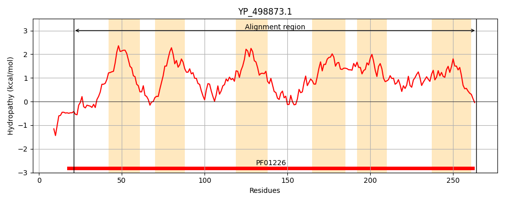
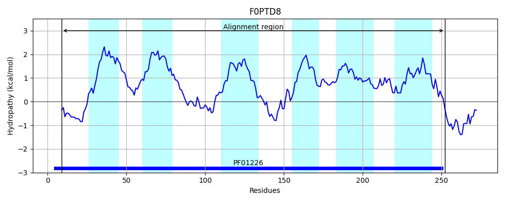
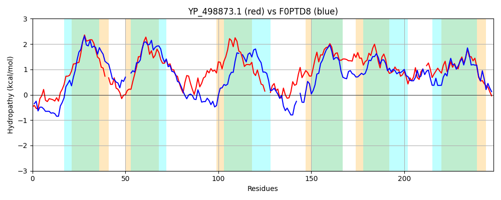

Hit Accession: F0PTD8
Hit TCID: 1.A.16.3.5
Hit Description: gnl|BL_ORD_ID|4089 gnl|TC-DB|F0PTD8|1.A.16.3.5 Formate/nitrite transporter family protein OS=Bacillus thuringiensis subsp. finitimus (strain YBT-020) OX=930170 GN=YBT020_07190 PE=4 SV=1
Mach Len: 248
e:0.000000
Query TMS Count : 6
Hit TMS Count: 6
TMS-Overlap Score: 5.200000
Predicted Substrates:CHEBI:15740;formate
BLAST Alignment:
Score: 289 , Bit scores: 115 bits, E-value: 7.3e-31, Alignment length: 248, Percentage identity: 31
Query: 21 VVETIRTKDILQSVYLKRYLLRAMMAGFIIGIITVFVLSV-KATHEPDLPPGIVNMASAITFSFALVLILFTNSELLTSNFMYFTVGLYYKVIKPTRVLKIFLLCFAGNILGAAILFSFMRFSNVM--TPDMLNQLSAVIEHKTLSTGFVSILMKAIFANFFINISLVIAMQIDDVLAKMFVMMFGVTIFAFMGYEHVVYNSCLFMGGLIY-QVDTLHFIPAISNIAAAFIGNYIGGGLIIGLFYAYL 264
VV+ ++K + +Y +RA +AG IG I V + H D P +A+++ F AL+LI++ +EL T N MYFTV K L+ + C+AGN+ G A+ F+ + ++ + D + ++ V+E K ++T + + KAI N+ + ++ + Q+ AK+ +MM V F GYEH + N LF L+ +T+ F AI N+ IGN IGG + +G+ Y YL
Sbjct: 9 VVKLAKSKKQMLDTNPMQYFIRAALAGIYIGFIIVLCFKLGNFFHIADSPA--TYLAASMFFGIALILIIYGGAELFTGNTMYFTVATLRKETTIADTLRNWFACYAGNLAG-ALFFALLFYATGIFEAIDHGHFMNKVVEGK-MNTPTMQLFFKAILCNWLVCLACFLPSQVKGDTAKIIMMMMLVFTFFLSGYEHSIANLSLFALSLVSPHPETISFAGAIHNLIPVTIGNIIGGSVFVGMVYHYL 252 | Protein Hydropathy Plots: |
|---|
|  |  |
Pairwise Alignment-Hydropathy Plot:
|
|---|
|  |